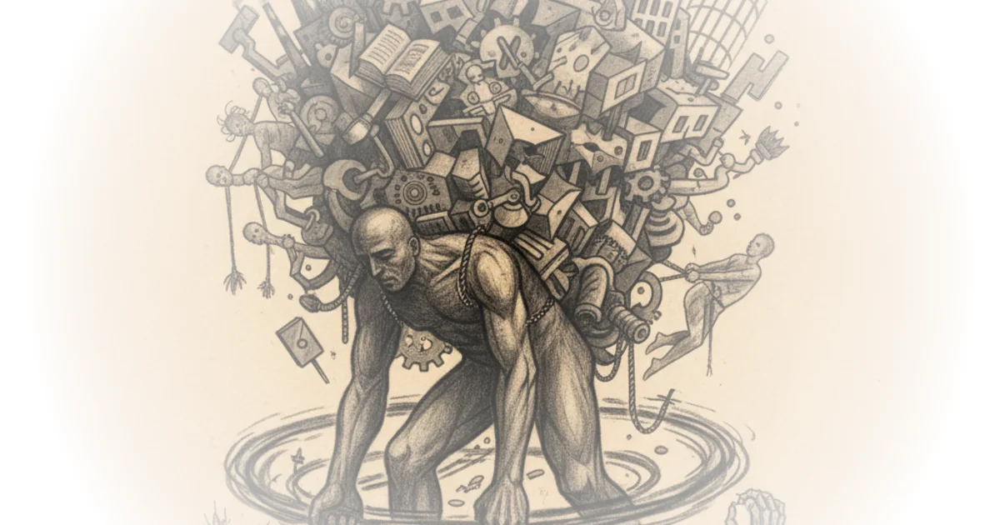

The most effective dictator of the 20th century wasn't born that way. He was once a promising young scholar who gave it all up to fight injustice—and ended up creating something far worse than the regime he opposed.
Stephen Kotkin, senior fellow at the Hoover Institution and author of three volumes on Stalin, makes this argument in his biography of the Soviet leader. The story begins not with Stalin's terror, but with an earlier question: why did Stalin become so good at dictatorship?

The Tsar's Impossible Dilemma
The Tsarist regime faced a fundamental problem that persists today for autocracies like Iran and China. It needed modern military and industrial power to compete internationally—but importing modernity meant importing the very ideas that threatened dictatorial rule.
Tsarist Russia couldn't allow universities because educated people developed political ideas. It repressed workers' movements while needing those workers for industry. It needed engineers to build steel mills and tanks, but feared what happens when engineers start thinking about how politics should be organized.
You need the engineers to design modern weapons, but you don't want them to have their own ideas about government.
This was the Tsar's impossible dilemma: modernity requires the very freedoms that undermine autocracy. And it applies today. The Iranian regime has this problem. Beijing has this problem. Modern Russia has this problem. How do you import tanks and airplanes and AI while keeping out separation of powers, freedom, and property rights?
Stalin's Revolution Was Worse Than What He Fought
Stalin went into the underground not seeking power but dedicated to fighting Tsarist injustices. From ages 17 through his late thirties, he had no job, no profession, no income—constantly in and out of prison, in and out of Siberian exile.
He never graduated from the seminary—the highest education available in Georgia—because the Tsarist regime refused to allow universities. He spent twenty years as a penniless revolutionary, living off government money in exile.
And here's the perverse consequence: what Stalin produced was a much more unjust regime than the one he was fighting against. His revolution created the very terror he sought to dismantle.
Why Constitutionalism Failed Everywhere
Critics might note that this analysis seems to endorse authoritarian rule—which ignores how badly these regimes failed for their own people.
The constitutionalists across Russia, Germany, Mexico, Iran, China, and Portugal all took power briefly and were swept away by more radical revolutionary movements. The pattern was consistent: when peasants and workers participate in constitutional revolution, it isn't enough for them.
The key insight is timing. Earlier in history—before the mass age—countries like England and America could introduce constitutional order with restricted voting rights. Property holders voted first. Over time, others gained citizenship. But when masses of people are already politically organized, constitutionalism gets overwhelmed by more radical demands.
Bottom Line
Kotkin's strongest argument is that modern autocracies face an impossible choice: they must import the technology and industry needed to compete globally, but those very imports threaten their rule. This isn't just historical curiosity—it's a dynamic that defines China's current challenges with AI, Iran's struggles with modernization, and Russia's tensions between technology and control.
The biggest vulnerability in this analysis is that it can sound like an endorsement of autocracy—which Kotkin explicitly rejects. The lesson isn't that authoritarian rule is better, but that the pressures driving regimes toward repression are persistent, powerful, and continue to shape international politics today.